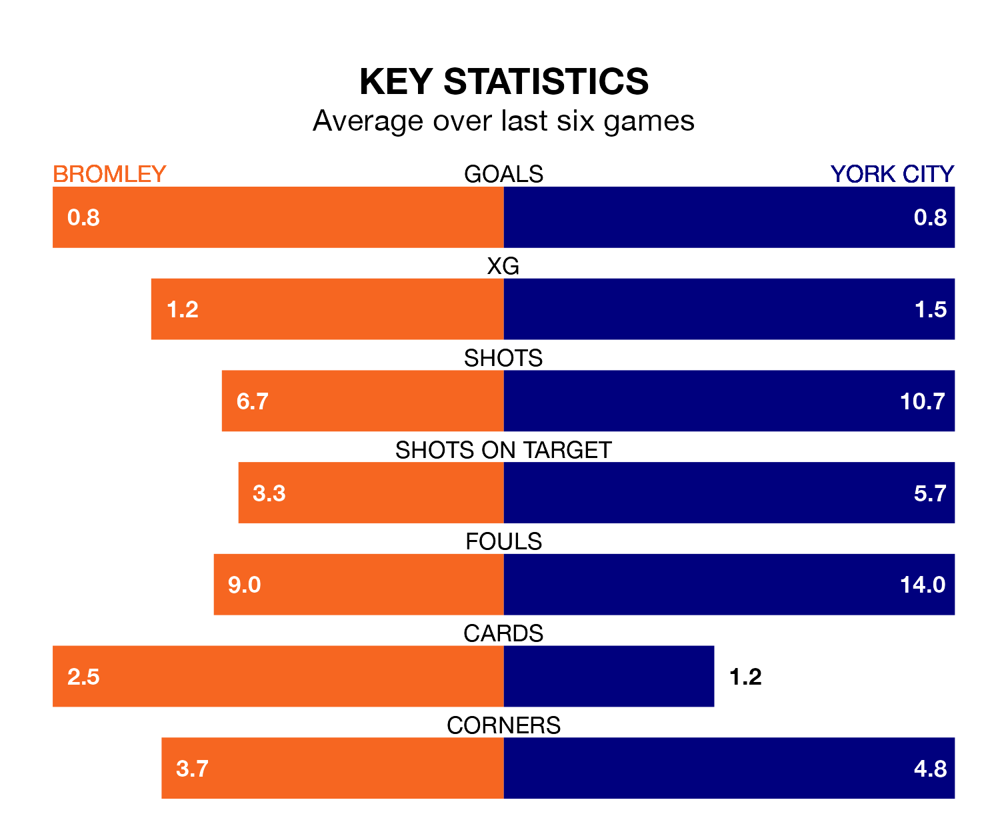

Bromley host York City in Saturday's match at Hayes Lane looking to bounce back from defeat last time out in the National League.
The Ravens, who sit third in the league after 39 games, fell to a 0-1 away defeat to Wealdstone on Wednesday.
They face a York side who picked up a win in their last match, a 1-0 victory against Aldershot Town, and who sit 21st in the table.
In the last 10 years, Bromley and York have played each other on six occasions. Bromley won three of them, York two, and they drew once.
On average, the Ravens scored 1.8 goals and York 1.3 in those matches.
Their last meeting was on October 7, when they played out a 2-2 draw.
With 48 goals in 40 games so far this season, York are scoring at below the league average rate with 1.2 goals per game. And they are conceding more than average, letting in 65 goals at a rate of 1.6 per game.
Bromley, meanwhile, are above average scorers, with 1.6 goals per game, compared to a league average of 1.5. They have conceded 1.1 goals per game.
The Ravens are in mixed form in the National League, with two wins and three draws from their last six games.
With a win and a draw over that period, City's form is worse – they have taken four points from 18, compared to the home side's nine.
Updated: 10:19 (UTC), 22/03/24